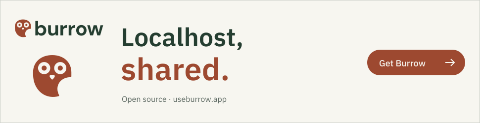

Visit Burrow
Visit BurrowBRAMBLE FAMILY / COLLECTION 04 / DESIGN KIT
Localhost, shared.
A public HTTPS link for the app on your machine. Share a demo. Receive a webhook. Keep your flow.
Typography: IBM Plex Sans + IBM Plex Mono. Keep the supplied signatures outlined. Use the web fonts for live text.
One considered palette.
Paper
#f7f6f0
#f7f6f0
Ink
#253e31
#253e31
Accent
#9d4930
#9d4930
Support
#efbc96
#efbc96
Muted
#536358
#536358
Line
#d8dfd1
#d8dfd1
Surface
#fffef9
#fffef9
The approved signature.

A shared rhythm. Your own voice.
Use an 8px spacing rhythm, 48px primary controls, generous paper backgrounds and a single clear next action. Keep body text at 4.5:1 contrast. Motion supports the story and respects reduced-motion preferences.
Ready for the next story.

Take what you need.
Printable brand guideWebsite design guideAll colourwaysType rolesSocial imageCampaign bannerFaviconApple touch iconibm plex mono 400ibm plex mono 500ibm plex sans 400ibm plex sans 500ibm plex sans 600ibm plex sans 700


Approved assets from marketing collection 04. Source paths and checksums are in the repository design-kit/asset-manifest.json. Keep the files in licenses/ with redistributed fonts. Illustrative artwork is not a newly captured native screenshot.